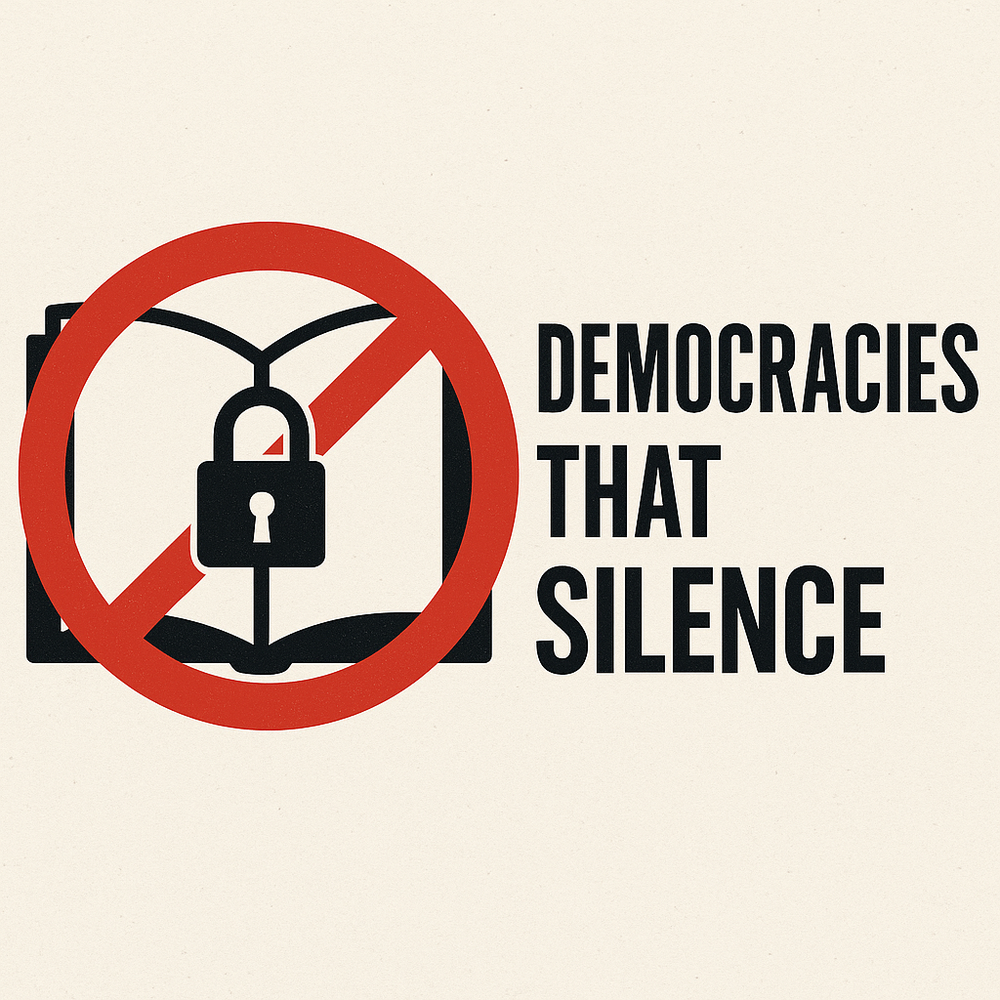

Publicado em 2025-04-29 17:29:03
Durante décadas, acreditámos que a democracia representativa era o baluarte da liberdade, o escudo contra a tirania, a herdeira legítima dos ideais iluministas. Mas à medida que o tempo avança, o verniz da virtude começa a estalar, e revela-se por baixo uma realidade desconfortável: a censura renasceu — discreta, elegante e eficaz.
Hoje, as democracias já não precisam de prisões para os dissidentes.
Não proíbem livros com decretos.
Não queimam ideias nas praças.
Limitam-se a apagar, a bloquear, a silenciar… digitalmente.
Sob a capa da legalidade, escondem-se cláusulas ambíguas.
Sob a bandeira da moderação, instalam-se algoritmos inquisidores.
Sob a máscara do progresso, cala-se quem pensa fora do script dominante.
As ditaduras usavam a força.
Estas democracias contemporâneas usam as plataformas.
Usam os “termos de serviço” como algemas invisíveis.
Não se agride o corpo.
Silencia-se a ideia.
Não se manda calar com gritos — manda-se com um e-mail automatizado.
Não se prende o autor — apaga-se o conteúdo.
E tudo isto se faz com a convicção cínica de estar a “proteger o bem comum”.
Mas o que é o bem comum, senão a soma das liberdades individuais?
O pensamento livre tornou-se desconfortável.
A crítica já não é bem-vinda.
A sátira é vista como ameaça.
A diversidade de ideias é tolerada… desde que não questione a narrativa central.
A democracia, tal como está a ser praticada, transformou-se num palco.
Um teatro bem iluminado onde os actores mudam,
mas o guião permanece escrito pelas mesmas mãos invisíveis.
É tempo de acordar do feitiço.
De perceber que não basta votar de quatro em quatro anos para viver em liberdade.
É tempo de reivindicar a soberania sobre a palavra, o pensamento e a criação.
A liberdade de expressão não pode depender da aprovação de plataformas, governos ou interesses comerciais.
Ou é livre — ou é decorativa.
E a História já nos ensinou:
toda a encenação acaba com o pano a cair.
Mas a verdade, essa,
renasce sempre — mesmo entre os escombros do silêncio.
vivemos num tempo em que a mediocridade não só é aceite — é promovida.
Enquanto os que pensam são silenciados, os que nada dizem são coroados.
A inteligência assusta. A irreverência incomoda.
E por isso, quem escreve com coragem é empurrado para fora do palco.